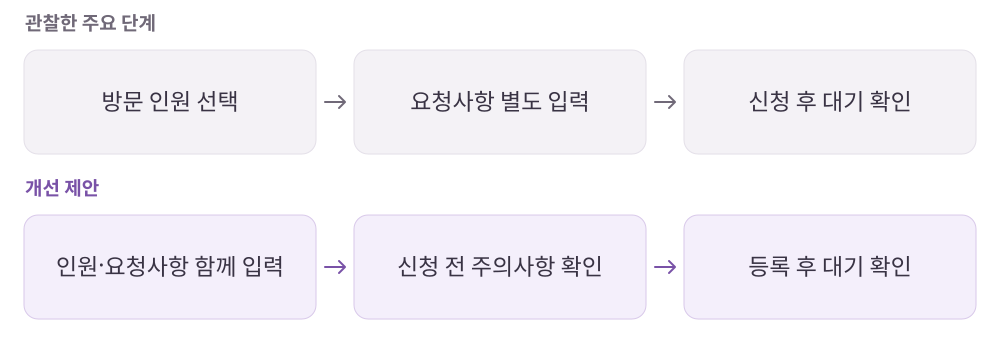

테이블링
줄은 원격으로 서는데, 화면은 몇 번을 넘어야 할까?
매장에 도착하기 전 대기를 등록하고 순서를 확인하는 원격 줄서기 서비스.
개인 학습 기록 · 원문에 기록한 당시의 경험을 재구성했습니다. 기획 의도는 개인 해석이며 개선안·확인 지표는 검증 전 제안입니다.
01사용자와 해결 방향
누구를 위한 서비스인가매장 앞에서 오래 기다리고 싶지 않은 방문자와 대기·노쇼를 관리해야 하는 매장.
Why · 사용자의 필요
인기 식당을 방문하고 싶지만 입장까지 얼마나 기다릴지 모르는 현장 대기는 부담스럽다.
What · 서비스의 답
원격 신청과 대기 상태 안내, 현장 도착 확인을 연결해 기다림을 관리한다.
02핵심 기능과 벤치마킹
- 원격 줄서기
- 매장 도착 전에 대기 시작.
- 순서·알림
- 남은 대기와 입장 시점을 안내.
- 현장 확정 코드
- 원격 신청자가 실제 도착했는지 확인하는 노쇼 대응 장치.
비교해서 살펴본 지점
- 캐치테이블
- 인원 선택에서 웨이팅 등록·정보 확인까지의 전환과 주의사항 안내 시점을 비교.
03사용자 흐름과 기획 의도
인원과 요청사항을 한 단계로 묶는 제안

관찰한 경험
- 현장 코드 입력을 도착 확인·노쇼 방지 장치로 해석하고, 캐치테이블과 신청 흐름을 비교했습니다.
- 대기 인원과 예상 시간, 휴무·준비 중 상태, 사진 리뷰의 충분성을 살펴봤습니다.
왜 이렇게 설계했을까 · 나의 해석
- 원격 대기의 가치는 기다리는 장소를 바꾸는 데서 끝나지 않고, 지금 방문할 수 있는지 예측하게 하는 데 있다고 봤습니다.
- 신청 이전에 알아야 하는 주의사항과 신청 후 확인할 상태를 구분할 필요가 있다고 정리했습니다.
04문제와 개선 제안
Pain Point · 걸리는 지점
- 인원 선택과 요청사항이 나뉘어 대기 등록 과정의 화면 전환이 많았다.
- 휴무·준비 중 상태를 매장에 들어가야 확인할 수 있었다.
- 사진 리뷰가 부족해 매장 선택의 근거가 제한적이었다.
내가 바꿔본다면
- 인원 선택과 요청사항 입력을 묶어 화면 전환 줄이기.
- 목록에서 휴무·준비 중 상태를 표시하고 사진 리뷰 작성을 유도하는 장치 검토.
- 리뷰 등록 시 비방·악성 게시물 기준과 조치 안내.
확인할 지표 · 검증 계획 제안
대기 신청 완료율·소요 시간, 휴무 매장 오진입, 사진 리뷰 작성률을 확인한다.
05장점과 아쉬운 지점
좋았던 점
- 현장에서 기다리는 대신 이동과 다른 활동 중 대기를 관리할 수 있다.
아쉬운 점 · 더 살필 점
- 대기 등록의 편리함과 매장의 노쇼·리뷰 관리 부담을 함께 다뤄야 한다.
06내가 주목한 점
- 입력 단계 통합이 가능한지 보되, 신청 전 알아야 할 주의사항은 앞에 둘 것.
- 신청과 현장 도착 확인은 서로 다른 상태로 설계할 것.
분석 원문테이블링 · 노션 원문 ↗